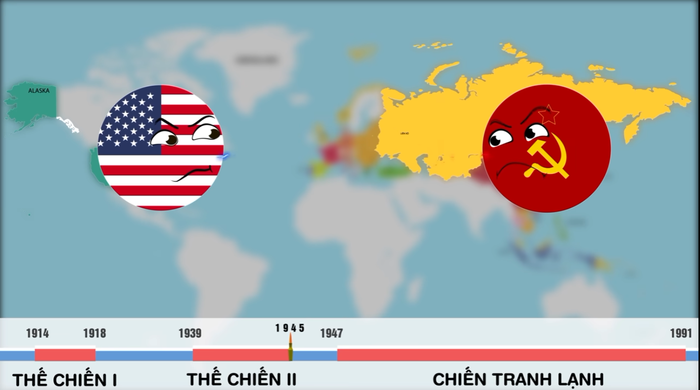

Chiến tranh Lạnh (1947 - 1991): Bản hùng ca và bi kịch của trật tự thế giới lưỡng cực
Năm 1945, sự sụp đổ của phe Phát xít đã đưa Mỹ và Liên Xô vươn lên thành hai siêu cường thống trị địa chính trị toàn cầu. Tuy nhiên, đây không đơn thuần là một cuộc đối đầu quân sự mà còn là sự va chạm khốc liệt giữa hai hệ tư tưởng đối lập, phơi bày những đứt gãy không thể hàn gắn và định hình toàn bộ dòng chảy lịch sử thế giới trong suốt gần nửa thế kỷ.

1. Sự hình thành hai thế giới: Từ đống đổ nát của Thế chiến II
Sau năm 1945, trật tự thế giới cũ tan rã khi các đế chế thực dân như Anh và Pháp suy kiệt, tạo ra một khoảng trống quyền lực khổng lồ. Sự thay đổi quyền lực này đã đẩy hai đồng minh cũ là Mỹ và Liên Xô vào thế đối đầu trực diện nhằm xác lập tầm ảnh hưởng. Tại Hội nghị Yalta (tháng 2/1945), các cường quốc đã tiến hành phân chia châu Âu thành các phạm vi ảnh hưởng riêng biệt, đặt nền móng cho trật tự Lưỡng cực.
Sự khác biệt căn bản giữa hai khối được thể hiện qua mô hình kinh tế - xã hội đối lập:
| Tiêu chí | Khối Tây Âu (Tư bản chủ nghĩa) | Khối Đông Âu (Xã hội chủ nghĩa) |
|---|---|---|
| Quyền sở hữu tài sản | Sở hữu tư nhân về tài sản và tư liệu sản xuất. | Sở hữu công cộng là nền tảng cốt lõi. |
| Cơ chế vận hành kinh tế | Thị trường tự do, khuyến khích đầu tư tư nhân. | Nhà nước quản lý, kế hoạch hóa tập trung. |
| Mục tiêu xã hội | Tối đa hóa lợi nhuận, thúc đẩy tăng trưởng. | Xóa bỏ bóc lột, hướng tới sự bình đẳng. |
Biểu tượng của sự chia cắt này phơi bày rõ nhất tại nước Đức. Tháng 7/1948, việc Mỹ, Anh, Pháp hợp nhất các vùng chiếm đóng để thành lập Cộng hòa Liên bang Đức đã buộc Liên Xô phải đáp trả bằng cách thiết lập Cộng hòa Dân chủ Đức. Thủ đô Berlin bị chia cắt bởi Bức tường Berlin, một ranh giới vật lý nghiệt ngã ngăn cách hai thế giới. Sự rạn nứt sâu sắc này đã biến những lý tưởng hòa bình của Liên hợp quốc (1945) thành một cuộc chạy đua quyền lực không khoan nhượng.
2. Cuộc chiến không tiếng súng: Học thuyết Truman và Hệ thống liên minh quân sự
Các siêu cường đã nhanh chóng "vũ khí hóa" viện trợ và thể chế hóa xung đột. Năm 1947, Học thuyết Truman ra đời, khẳng định sự can thiệp của Mỹ để ngăn chặn tầm ảnh hưởng của chủ nghĩa cộng sản. Ngay sau đó, Kế hoạch Marshall với nguồn viện trợ khổng lồ 17 tỷ USD đã được triển khai để tái thiết Tây Âu, biến khu vực này thành tiền đồn chống Xô viết.
Liên Xô lập tức đối trọng bằng cách thành lập Hội đồng Tương trợ Kinh tế (SEV) nhằm thắt chặt liên kết kinh tế Đông Âu. Về quân sự, thế giới bị đẩy vào tình trạng vũ trang hóa cực độ với sự ra đời của NATO (1949) và Tổ chức Warsaw (1955). Đặc biệt, ngày 29/8/1949, Liên Xô thử nghiệm thành công bom nguyên tử, chính thức phá vỡ thế độc quyền hạt nhân của Mỹ, đưa nhân loại vào kỷ nguyên của nỗi sợ hãi nguyên tử. Từ đây, sự kiềm tỏa trực tiếp giữa hai siêu cường buộc họ phải chuyển hướng xung đột sang các khu vực khác trên thế giới.
3. Những "điểm nóng" toàn cầu: Khi chiến tranh không còn "lạnh"
Khái niệm "Chiến tranh ủy nhiệm" (Proxy War) xuất hiện khi Mỹ và Liên Xô biến các quốc gia thứ ba thành bàn cờ cho tham vọng của mình.
- Nội chiến Hy Lạp: Đây là cuộc chiến ủy nhiệm đầu tiên. Dù được Liên Xô hỗ trợ, nhưng mâu thuẫn giữa Nam Tư (Tito) và Liên Xô (Stalin) khiến nguồn viện trợ bị cắt đứt, dẫn đến thất bại của phe cộng sản tại đây.
- Châu Á chuyển mình: Sự thành lập của Cộng hòa Nhân dân Trung Hoa (1949) đã nối liền hệ thống xã hội chủ nghĩa từ Âu sang Á. Tại đây, Quốc dân Đảng dù sở hữu quân số áp đảo nhưng đã sụp đổ do nội bộ tham nhũng và nền kinh tế siêu lạm phát, tạo điều kiện cho Mao Trạch Đông giành thắng lợi với sự ủng hộ của nhân dân.
- Triều Tiên và Việt Nam: Chiến tranh Triều Tiên (1950 - 1953) tại vĩ tuyến 38 kết thúc trong bế tắc. Trong khi đó, tại Việt Nam, sau thất bại của Pháp tại Điện Biên Phủ (1954), Mỹ đã lún sâu vào vũng lầy quân sự tại vĩ tuyến 17. Cuộc chiến tiêu tốn hàng trăm tỷ USD này đã trở thành một trong những thất bại tốn kém và gây tranh cãi nhất lịch sử Mỹ trước khi kết thúc năm 1975.
- Khủng hoảng Kênh đào Suez (1956): Sự kiện này phơi bày sự rạn nứt trong nội bộ phe phương Tây khi Mỹ đe dọa cắt nguồn cung dầu để ép Anh và Pháp phải rút quân khỏi Ai Cập, khẳng định vị thế điều phối tối cao của Washington.
4. Đua tranh công nghệ và Đỉnh điểm của sự căng thẳng
Cuộc đua không gian không chỉ là tham vọng khoa học mà còn là công cụ chứng minh ưu thế hệ tư tưởng trước thế giới. Năm 1957, việc Liên Xô phóng thành công vệ tinh Sputnik đã gây cú sốc lớn cho phương Tây, buộc Mỹ phải thành lập NASA và dồn lực cho chương trình đưa người lên Mặt Trăng để giành lại thế thượng phong.
Đỉnh điểm của sự nguy hiểm là Cuộc khủng hoảng tên lửa Cuba (1962). Thế giới đã nín thở khi hai siêu cường đứng bên bờ vực hủy diệt hạt nhân. Chỉ sau những cuộc đàm phán nghẹt thở, căng thẳng mới hạ nhiệt khi Liên Xô rút tên lửa khỏi Cuba, đổi lại Mỹ cam kết không xâm lược đảo quốc này và rút tên lửa khỏi Ý cùng Thổ Nhĩ Kỳ.
5. Sự sụp đổ của một tượng đài và Trật tự thế giới mới
Từ cuối thập niên 70, gánh nặng ngân sách quân sự bắt đầu bào mòn sức mạnh của các siêu cường. Liên Xô rơi vào vũng lầy tại Afghanistan (1979), một cuộc chiến gây suy kiệt nghiêm trọng nền kinh tế và sức mạnh quân sự, tương tự như bài học của Mỹ tại Việt Nam.
Trong khi Liên Xô suy yếu và ngừng viện trợ cho các đồng minh, Mỹ đã khẳng định vị thế đơn cực bằng các hành động quân sự quyết đoán, tiêu biểu là cuộc xâm lược Panama (1989) với 27.000 quân để lật đổ nhà độc tài Manuel Noriega. Sự kiện này diễn ra mà không gặp phải sự kháng cự đáng kể nào từ phía Moscow, minh chứng cho sự xoay trục quyền lực toàn cầu.
Năm 1990, Bức tường Berlin sụp đổ, nước Đức tái thống nhất. Đến năm 1991, Liên Xô chính thức tan rã, kéo theo sự giải thể của khối Warsaw và SEV. Trật tự thế giới hậu Chiến tranh Lạnh hình thành với sự trỗi dậy của Phong trào Giải phóng dân tộc, xu thế Toàn cầu hóa và sự vươn lên của các trung tâm kinh tế mới như Trung Quốc, Nhật Bản và Tây Âu.
Kết luận
Lịch sử Chiến tranh Lạnh để lại bài học đắt giá về cái giá của sự đối đầu. Thế giới đã vận động từ một trật tự lưỡng cực căng thẳng sang một trật tự đa cực, nơi sự hợp tác và phát triển bền vững thay thế cho tư duy hủy diệt lẫn nhau. Di sản của giai đoạn này vẫn đang tiếp tục định hình các mối quan hệ quốc tế trong thế kỷ 21.
Nguồn: YouTube